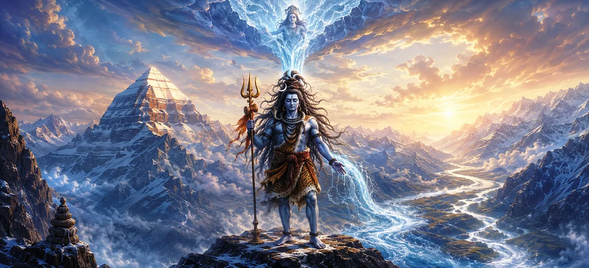

Ganga on Shiva
শিবের জটায় গঙ্গা
The image of Goddess Ganga flowing from Lord Shiva's matted locks is among the most beloved symbols associated with Mahadeva. It brings together Bhagiratha's determined tapasya, Ganga's heavenly power and Shiva's compassionate strength in one sacred story of descent, restraint, purification and grace.
When the celestial river agreed to descend, her force was too great for Earth to receive directly. Shiva accepted the tremendous current into his jata, held it without harm and released it gently. Overwhelming energy became a nourishing river because it passed through wisdom and self-mastery.
Six Treasures of Ganga's Sacred Descent
Bhagiratha's Tapasya
Persistent spiritual effort becomes the human beginning of Ganga's life-giving descent.
Ganga's Divine Flow
The heavenly river symbolizes purification, movement, nourishment and sacred continuity.
Shiva's Compassion
Mahadeva accepts a cosmic burden so that divine blessing may reach the world safely.
The Power of Jata
Shiva's matted locks represent yogic mastery able to hold immense energy without disturbance.
Purification
Ganga's waters inspire remembrance, prayer, renewal and the washing away of inner burden.
Blessing to Earth
A potentially destructive force becomes a river sustaining land, life and pilgrimage.
The Sacred Story of Ganga and Shiva
Bhagiratha's Great Resolve
King Bhagiratha is remembered for undertaking profound austerities with a compassionate purpose: he sought the descent of the sacred river so that his ancestors might receive peace and liberation. His effort was not for private comfort but for a duty extending across generations.
Bhagiratha's name has therefore become associated with extraordinary perseverance. The story teaches that a noble aim may demand patience, discipline and sustained effort long before its blessing becomes visible.
Ganga Agrees to Descend
Goddess Ganga consented to leave the heavenly realm and flow upon Earth. Yet her descent presented a danger: an unrestrained celestial torrent could strike the world with overwhelming force. A blessing of such magnitude required a vessel capable of receiving it.
This part of the story reveals a subtle truth: even beneficial power can cause harm when it arrives without measure, preparation or wise direction. Intention alone must be joined with capacity.
Shiva Receives the Heavenly River
Bhagiratha sought the aid of Lord Shiva, whose yogic power alone could receive the tremendous descent. Mahadeva invited Ganga to land in his matted locks. The heavenly current entered Shiva's jata and was held there rather than crashing violently upon Earth.
Shiva does not reject Ganga's power and does not allow it to destroy. He receives it completely. This is compassionate mastery: the ability to meet enormous force without fear, absorb it without agitation and guide it toward welfare.
The Gentle Release to Earth
After restraining the celestial torrent, Shiva released Ganga in a measured flow. What could have shattered the Earth became a river of nourishment, pilgrimage and sacred memory. Restraint did not eliminate her energy; it made that energy life-giving.
Bhagiratha then guided the river toward the fulfillment of his sacred duty. Divine grace and human perseverance worked together: prayer opened the way, Shiva made the descent safe and Bhagiratha continued the journey.
Shiva as Gangadhara
Because he bears Ganga, Shiva is lovingly praised as Gangadhara—the bearer or holder of the Ganga. Sacred images may show a stream or the personified river goddess emerging from his piled matted hair, forever recalling his role in the heavenly descent.
Gangadhara unites the still yogi and the compassionate Lord. Shiva's ascetic discipline is not withdrawal from the world's need; it gives him the capacity to serve the world without being overwhelmed by it.
The Inner Ganga of Purification
The outer river inspires an inner contemplation. The mind also carries powerful currents—emotion, desire, memory and fear. When released without awareness, they can overwhelm; when received in Shiva-like stillness, they can be understood and directed toward compassionate action.
To awaken the inner Ganga is to let truth and devotion wash through hardened habits. Purification is not escape from life but the renewal of intention, speech and conduct.
What Ganga on Shiva Teaches the Devotee
Perseverance
Bhagiratha shows that noble duties may require patient effort sustained over time.
Compassion
Shiva accepts a tremendous burden so that blessing may reach others safely.
Self-Mastery
Power becomes beneficial when held by a calm, disciplined and discerning mind.
Purification
Let sincere remembrance wash away pride, resentment and harmful intention.
Measured Action
Good intention must be joined with wisdom about timing, force and consequence.
Transformation
Overwhelming energy can become a life-giving current when guided consciously.
“May Gangadhara Shiva give us the strength to receive life's powerful currents with stillness and transform them into compassion, purification and blessing.”
Frequently Asked Questions
Why is Ganga shown in Lord Shiva's hair?
Sacred tradition tells that Shiva received the powerful heavenly descent of Goddess Ganga in his matted locks, restraining and softening her force before releasing her to flow upon Earth.
Who brought Ganga to Earth?
King Bhagiratha performed prolonged austerities so that Ganga would descend to Earth and help bring peace and liberation to his ancestors.
Why did Shiva need to control Ganga's descent?
Ganga's heavenly current was understood to be too powerful to fall directly upon Earth. Shiva compassionately received her force and released it in a life-giving flow.
What does Ganga on Shiva symbolize?
The image symbolizes purification, compassion, disciplined power, the transformation of overwhelming energy into blessing, and the meeting of spiritual austerity with grace.